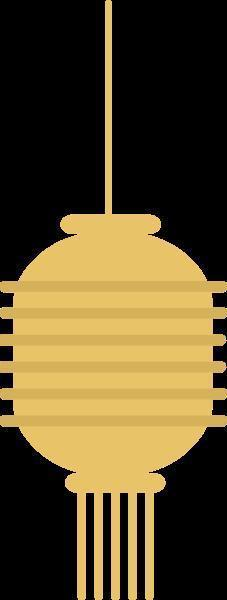
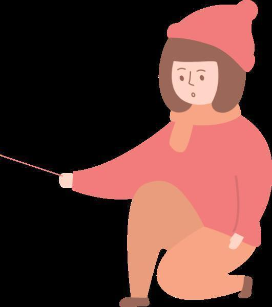
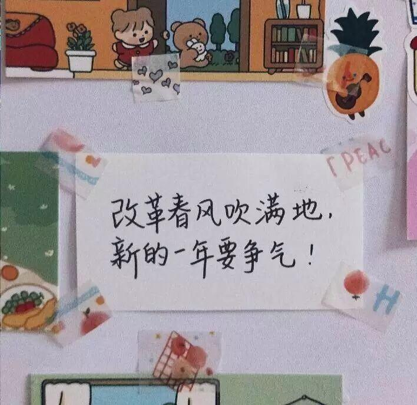
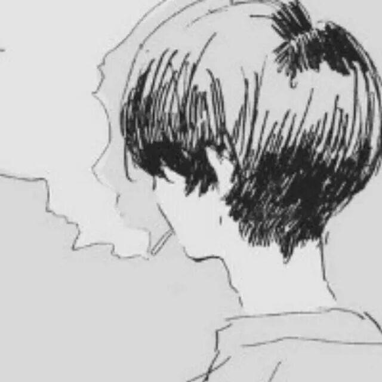

新年快乐，你也快乐！




元
快
旦
乐


不论此时此刻你在哪里
在灯火通明的街头迎接新年钟声
还是在温暖的家里和家人共同度过
在灰心失落中等着新年的顺利
还是在希望中准备继续努力
无论2019发生了什么
那些日子也一去不复返了
所有的不愉快都要熬过去了
2020年要更加努力呀，开心一点
听！新年的钟声敲响了
新年快乐！！
<< 滑动查看下一张图片 >>


昨晚的街道上一定很热闹吧，和超级超级喜欢的人携手跨进2020年很浪漫吧，零点的街头会一定充满着温暖与幸福。
感谢2019里陪在身边的人，一起看春华秋实夏蝉冬雪，一起分享小小的快乐和日常琐事，那些人，那些日子，都一点一点融进生命，写进岁月这本书里，2020继续做个温暖的人，眉眼带笑，热爱生活。
小编回想起昨晚各大卫视的跨年晚会：这晚会陪了我们一年又一年，每年都不会缺席。每次都有新的明星出现，而有的已销声匿迹，我们在一年一年长大，那些主持人眼角也有了掩盖不住的细纹。
感谢成长感谢经历，岁月的意义就是让人不断翻新吧，否定那个年幼无知的自己，再向理想中的模样一点一点靠近，回头看看，现在一定比年初有所成长有所进步吧。明年也要继续长大，去做更多有意义的事情，做个很棒的人。



记得在今天许下新年愿望吧，虽然去年的愿望还没有全部实现，但这些愿望能给自己小小的期许，给生活指明方向。
下面是小编收集的同学的一些新年愿望，大家看看是否跟你的一样呢。

栖迟
多喜乐，常安宁。
坚持健身，锻炼身体，脱单！！
岁月
聊表心意
没有痘痘，没有失眠，没有脱发。
找个女朋友。。

雷
白芷棒
考的全会，一定暴富，努力脱单，万事胜意！！
暴瘦！暴富！
鸭鸭
哈哈，小编总结一下 就是都想脱单呗~

欢欢喜喜亦或是悲伤不快已经过去
学业事业留有遗憾也不要气馁
新的一年已经起航，
小编在这里祝大家
所求皆如愿，所行化坦途
多喜乐，长安宁。

排版|辛学敏
文字|辛学敏
图片|网 络
想了解更多资讯，请关注我们~